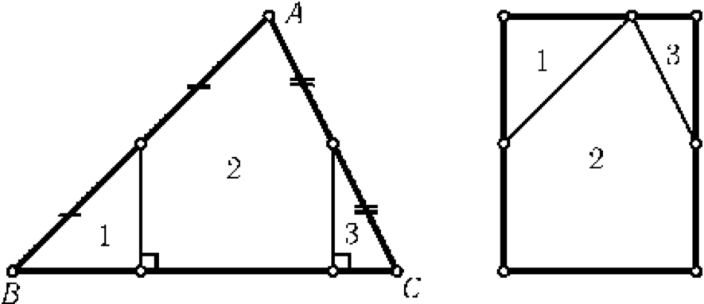

Cut an arbitrary triangle into 3 parts and out of these pieces construct a rectangle.
Let A be the largest angle of the triangle ABC. Then the angles B and C are acute. After cutting through the midpoints of the sides AB and AC perpendicular to BC, we rearrange the resulting parts, as shown in the figure.
